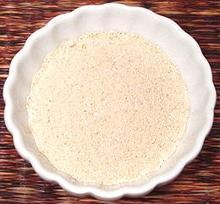

 |
Toasted Sweet Rice PowderThailand - Khao Kua, Khao Koor | ||||
| Makes: Effort: Sched: DoAhead: |
4 oz ** 20 min Yes |
This standard Thai ingredient is both a thickener and flavoring. It is available commercially in small shaker jars, but it's fresher made at home. See also Comments. | |||
|
1/2 |
c |
Sweet Rice (1) |
Make: - (20 min)
|